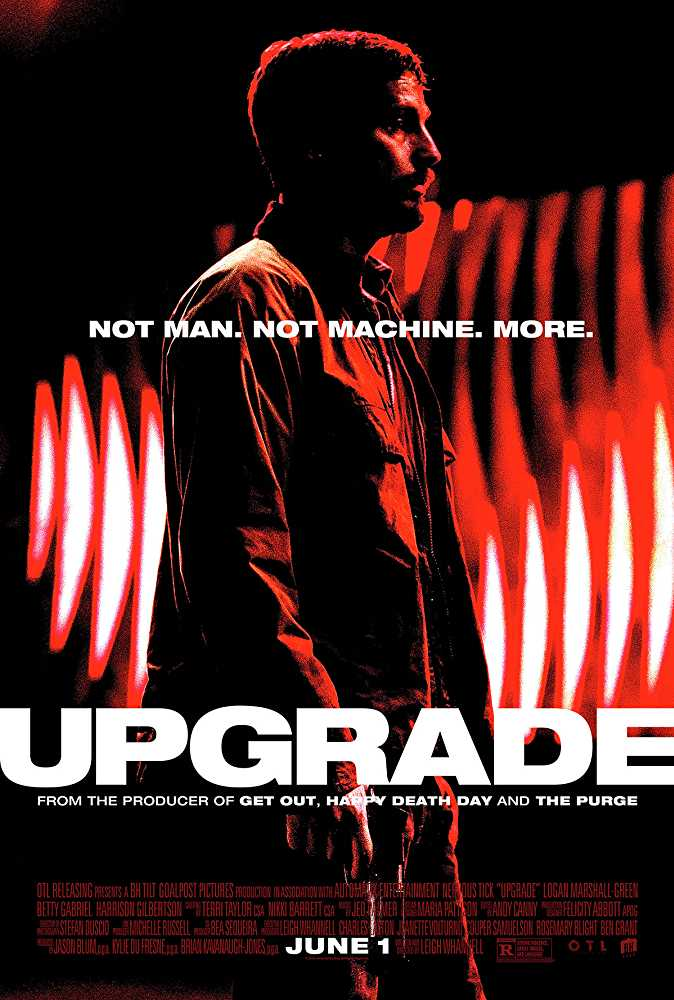

Blade Runner 2049
Language : English
Release Date : Oct 6 2017
Genre : Neo-Noir,Sci-Fi
All Ratings
More ratings will be updated soonGrab Your Tickets Now
Via PayTm :
Via BookMyShow :
Via Ticket New :
Via Fandango :
Via Vue Cinemas :
Via Cineworld :
Via Odeon :
Via Eventbrite :
Official Social Media Accounts
Facebook :
Twitter :
Instagram :
Similar Movie(s) That You Might Like
Kin (film)

Upgrade (film)
Description
Cast: Ryan Gosling, Harrison Ford, Ana de Armas, Sylvia Hoeks, Robin Wright, Mackenzie Davis, Dave Bautista, Jared Leto, Edward James Olmos, Barkhad Abdi, Carla Juri, Lennie James, David Dastmalchian, Hiam Abbass
Director: Denis Villeneuve
Based On: Characters from Do Androids Dream of Electric Sheep? by Philip K. Dick
Plot
A new Blade Runner, LAPD Officer K, discovers a dark secret that could bring an end to humanity. The discovery leads him to Rick Deckard, a former blade runner who disappeared thirty years ago.Source: Wikipedia
Reviews and News(After Release)
Movie review: Being blunt, this Blade Runner is seriously dullBy:The Mercury - 6 Oct,2017
Blade Runner 2049 movie review: Ryan Gosling is perfectly cast in this visual masterpieceBy:Firstpost - 6 Oct,2017
'Blade Runner 2049' film review: A stunning sequel with ideas of its ownBy:Scroll.in - 6 Oct,2017
Blade Runner 2049: a spoiler-filled explorationBy:Den of Geek UK - 6 Oct,2017
Breathtaking but lacking in substanceBy:The Hindu - 6 Oct,2017
Ridley Scott's definitive Blade Runner: The Final Cut little short of a masterpieceBy:Ridley Scott's definitive Blade Runner: The Final Cut little short of a masterpiece - 6 Oct,2017
How Are Replicants Created? 'Blade Runner 2049' Answers Some Of The MysteryBy:Bustle - 6 Oct,2017
Blade Runner 2049 review: Prepare to be astonishedBy:Express.co.uk - 6 Oct,2017
Blade Runner 2049 is the best film of the year so farBy:Brag Magazine - 6 Oct,2017
Blade Runner 2049 (2017) Review – Future Noir NourishmentBy:CGMagazine - 6 Oct,2017
Fun and science-fiction with Harrison Ford, Ryan Gosling of 'Blade Runner 2049'By:AZCentral.com - 6 Oct,2017
How Ridley Scott's 'Blade Runner' foreshadowed 2017's look — and anxietiesBy:The San Diego Union-Tribune - 5 Oct,2017
News(Before Release)
Ryan Gosling: I saw Blade Runner when I was 12By:Hindustan Times - 26 Sep,2017
I'm working on it: Ryan Gosling jokes about wanting role in new 'Indiana Jones' movieBy:The Asian Age - 26 Sep,2017
Third 'Blade Runner 2049' short prequel all set to be unveiled in JapanBy:Pakistan Today - 26 Sep,2017
Limited edition Blade Runner Johnnie Walker bottle released for REAL movie fansBy:Daily Star - 26 Sep,2017
After 'Blade Runner 2049,' Ryan Gosling now trying hard to get into another Harrison Ford franchise roleBy:Daily News & Analysis - 26 Sep,2017
Harrison Ford's favorite Ryan Gosling movie is not 'The Notebook'By:Times of India - 26 Sep,2017
Will the 'curse' of Blade Runner hit its sequelBy:The Australian - 26 Sep,2017
Ryan recalls being punched by FordBy:The Nation - 26 Sep,2017
Blade Runner 2049 - latest news, breaking stories and comment - The IndependentBy:The Independent - 26 Sep,2017
Harrison Ford really loved Ryan Gosling's dancing in 'La La Land'By:USA TODAY - 26 Sep,2017
Ryan Gosling Says He's "Working on" Getting a Role in New Indiana Jones Movie With Harrison FordBy:E! Online - 26 Sep,2017
The Funny Reason Harrison Ford Punching Ryan Gosling For Real Isn't Featured In Blade Runner 2049By:Cinema Blend - 26 Sep,2017
Blade Runner 2049 Script Erased Ryan Gosling's Fear of a RebootBy:MovieWeb - 26 Sep,2017
Daniel Craig Rumored to Be Pushing Studio to Tap This Director for 'Bond 25'By:Observer - 26 Sep,2017
Gosling's Blade Runner Fears 'Were Gone' After Script Was WrittenBy:Screen Rant - 25 Sep,2017
Bond 25: Daniel Craig Wants Denis Villeneuve To DirectBy:Screen Rant - 25 Sep,2017
Blade Runner 2049 director Denis Villeneuve: Deckard is humanBy:The National - 24 Sep,2017
Hear A Clip From El-P's “Rejected” Blade Runner 2049 Trailer ScoreBy:Stereogum - 23 Sep,2017
'Blade Runner 2049' was a tough shoot: Harrison FordBy:Times of India - 20 Sep,2017
'It's a film that haunts you': Ryan Gosling and Harrison Ford 'dish' on the super-secretive Blade Runner 2049By:Daily Mail - 20 Sep,2017
The Replicant: Inside the Dark Future of Blade Runner 2049By:WIRED - 19 Sep,2017
Ryan Gosling: Being punched by Harrison Ford on Blade Runner was a 'privilege'By:Evening Standard - 19 Sep,2017
Jared Leto thrills in the first enigmatic prequel to 'Blade Runner 2049'By:The Daily Dot - 30 Aug,2017
Trailers And Others Videos